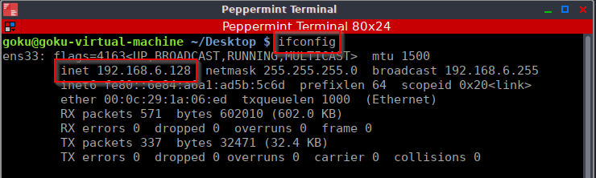

IP -> Internet Protocol

ifconfig -> a command used to get IP address over the linux os (Operating System)
ipv4 (is in decimal notation), while ipv6 (is in hexadecimal notation)
IP adress: 7.7.7.7
in Binary format: 00000111.00000111.00000111.00000111
maximum we can have is 255.255.255.255
128 64 32 16 8 4 2 1 => sum up's to 255
maximum number of ipv4 IP's we can have is: 2 ^ 32
32 because, ipv4 is 32 bit
for ipv6, we can have 2^128 address
NAT - Network Address Translation
There are private ip adresses, that are not in the public but reserved for private use
Class A -> 10.0.0.0 , Number of networks is: 126 , Number of hosts per Network: 16,646,144
Class B -> 172.16.0.0 to 172.31.0.0 , Number of networks is: 16,383 , Number of hosts per network: 65,024
Class C -> 192.168.0.0 to 192.168.255.255 , Number of networks is: 2,097,151 , Number of hosts per network: 254
Loopback or localhost -> 127.0.0.0 to 127.0.0.7
IPv4 or ipv6 are layer 3 protocol. Layer 3 is a router. Since, we route via an IP address
Layer 2 has MAC address (or physical address) for switching
xx.xx.xx .xx.xx.xx (mac address format)
(vendor or identifiers)